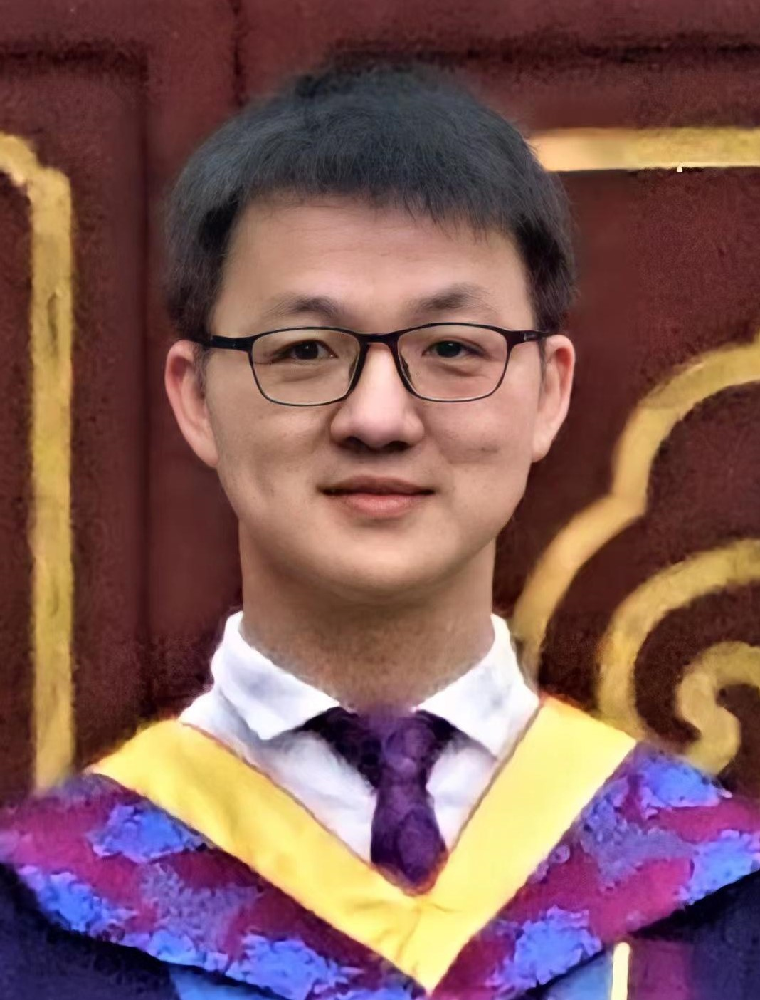

|
Yunfan Wang （王云帆）
|
 |
Yunfan Wang (VLSI)
Ph.D. Student in the EECS Department at University of Michigan
Ann Arbor, Michigan, United States
yunfa@umich.edu
1301 Beal Ave
[ Google Scholar]
[CV]
弱者，道之用
(Weakness enables dao's functionality)
|
About Me
Weclome to Yunfan's website. I am a Ph.D. student at Michigan integrated circuit lab, Michigan, USA, advised by Professor David Blaauw. Professor Hun Seok Kim and Doctor Steve Young are working in close collaborate with us.
Before joining the Michigan integrated circuit lab, I got my M.S and B.S from Tsinghua University, Beijing, China in 2018 and 2021, respectively. My current research interests include algorithms, systems, and circuits for low-power applications.
Education
- Ph.D. in Electrical and Computer Engineering, University of Michigan, Ann Arbor, Aug. 2021 - May 2025 (Expected)
- M.S. in Electronic Engineering, Tsinghua University, Aug. 2018 - June 2021
- B.S. in Mathematics and Physics, Tsinghua University, Aug. 2014 - July 2018
Research Interests
- Algorithms, systems, and circuits for low-power applications
- Integrated TeraHertz (THz) circuits and systems
|